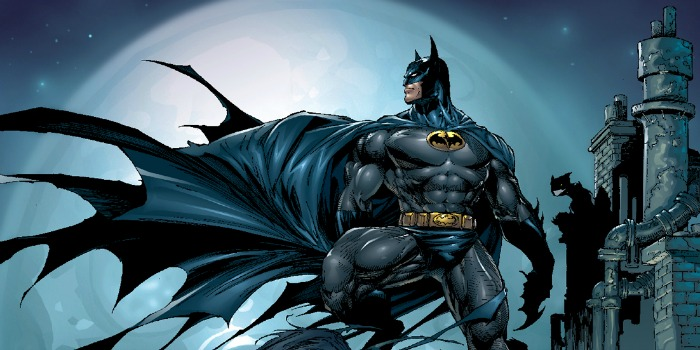

Tanto superheores como no tan superheroes
¿Quien no ha querido ser uno desde su más tierna infancia?
Un superhéroe es un personaje de ficción pues sus características superan las del héroe clásico, generalmente con poderes sobrehumanos aunque no necesariamente,
y entroncado con la ciencia ficción. Generados a finales de los años 1930 en la industria del comic book estadounidense, que contribuyeron a levantar, han gozado
de multitud de adaptaciones a otros medios, especialmente el cine.
La historia del género puede ser dividida en las siguientes "eras" o "edades":
El concepto superhéroe se retrotrae a La Pimpinela Escarlata, serie de novelas de capa y espada en las que Emma Orczy de Orci, baronesa británica de origen
húngaro, crea a Sir Percy Blakeney, conocido en la sociedad británica georgiana como interesado más en sus ropas que en cualquier otra cosa. Pero él lleva una
vida doble como «la Pimpinela Escarlata», salvador de aristócratas e inocentes durante el Reinado del Terror después de la Revolución francesa.
Edad de Oro
Desde finales de los años 1920, el concepto se estaba incubando en las series de aventuras de grafismo realista y las pulp magazines. Lee Falk sería el guionista
de The Phantom (1936), que puede considerarse un precursor estético del género, cuando no su pionero. Tradicionalmente se considera, sin embargo, que el primer
superhéroe de la historia fue Superman (1938) de DC Comics, cuyo éxito fue enorme y generó un sinfín de imitaciones que sostuvieron la industria del comic book
durante años. Pero es imprescindible observar que, antes que los estadounidenses The Phantom y Superman, en Japón surge Fantasmagórico (1930 o 1931), personaje
que anticipa características obvias (apariencia espectral así como la habilidad para volar) que luego se asocian con The Phantom, Superman y Batman. Hay que
recordar que Fantasmagórico es el nombre castellano del héroe japonés; su nombre original es Ōgon Bat; el Murciélago Dorado.
Después de Fantasmagórico, The Phantom y Superman, nacen superhéroes como Namor en abril de 1939 (primer superhéroe de Timely, predecesora de Marvel Comics),
Batman en mayo de 1939, la Antorcha Humana en octubre de 1939 y al año siguiente Flash o Linterna Verde. Como señala Oscar Masotta, "no es casual que el período
que va desde el "crack" del 29, pasando por los años de la guerra civil española, hasta el comienzo de la segunda guerra mundial, coincida con la aparición de
Superman, Batman o Capitán Marvel".
Las primeras historias de superhéroes contenían esquemas narrativos muy parecidos a los de las más recientes tiras de aventuras[cita requerida]: historia entre
la realidad y la ficción, en forma de serie continua, basada en un protagonista carismático con doble identidad, máscara o disfraz y otros complementos. Bien
visto, lo único que añadieron algunos superhéroes fueron los superpoderes, pero desde el punto de vista industrial acabarían revolucionando el mercado.
Igual que las historietas japonesas coetáneas, pronto se dejarán imbuir del espíritu bélico de la segunda guerra mundial, presentando en muchas ocasiones
nombres o uniformes relacionados con sus símbolos nacionales y enfrentándose a los enemigos del país. Es el caso de The Shield de MLJ Magazines y Uncle Sam de
Quality Comics, que surgieron en 1940, y la Mujer Maravilla de William Moulton Marston y el Capitán América de Joe Simon y Jack Kirby, ambos de 1941. Gracias al
marco histórico en el que nacieron lograron un gran éxito comercial, pero al finalizar la guerra fueron cayendo en el olvido. Muy diferente es el renovador The
Spirit (1940) de Will Eisner.
En Italia, Vincenzo Baggioli y Carlo Cossio crean en 1938 a Dick Fulmine, un superhéroe autóctono, aunque carecía de poderes.
Edad Atómica u Oscura
Tras la segunda guerra mundial, el éxito de las historietas de superhéroes empezó a disminuir, fueron sustituidas por todo tipo de géneros como la serie negra,
historietas infantiles, románticas, de monstruos, westerns, etc. Por si esto fuera poco, el psiquiatra Fredric Wertham (en su obra La seducción del inocente)
afirmaba a finales de los años 1950 que los superhéroes creaban una distorsión de la realidad. Citaba, entre otros ejemplos, que el hecho de que Superman pudiera
volar generaba falsas esperanzas, que Batman y Robin tenían una relación pedófila y que la Mujer Maravilla no podía estar como igual en un grupo de hombres como
la Liga de la Justicia. Además afirmaba que todos estos ejemplos eran una mezcla volátil que daba como resultado conductas agresivas así como el
desencadenamiento de la violencia juvenil/adulto.
Edad de Plata
Todo eso cambió en 1961 cuando, siguiendo la estela de la Liga de la Justicia de DC, la editorial Marvel Comics decidió crear su propio grupo de superhéroes y
se lo encargó al editor y guionista Stan Lee, que trabajó con varios dibujantes.
El primer número de Los 4 Fantásticos, obra de Lee y del dibujante Jack Kirby, apareció en noviembre de 1961, y la humanidad de los personajes, sumada a la
combinación de elementos de otros géneros mucho más comerciales de la época, catapultó a la serie en las listas de ventas. Azuzados por este éxito, Stan Lee,
Jack Kirby y Steve Ditko se lanzaron a la creación de una gran cantidad de personajes: "Hulk", "Thor", "Spider-Man", "Daredevil" o "X-Men", todos ellos
superhéroes con problemas de diferente índole (de salud, de aceptación social, económicos, etc.).
Uno de los méritos de Stan Lee es la humanización de los personajes, así como el hecho de convertir en héroes a personas con problemas. Spider-Man es un joven
del que abusan sus compañeros de clase, en parte porque es impopular; Daredevil es ciego; Thor, cuando es humano, es cojo; Iron Man es un enfermo del corazón;
los X-Men en sus orígenes eran jóvenes marginados, etc. En cierta medida, este universo de superhéroes es un reflejo de los cambios profundos que comenzaba a
vivir E.E.U.U. con las luchas por los derechos civiles".
Las relaciones de tipo humano entre los superhéroes pasaron a ser más importantes, pudiendo haber enfrentamientos, o por lo menos retos, entre los buenos, como
sucede entre la Antorcha Humana y Spider-Man. También hay que destacar que estos superhéroes procuran no matar cuando actúan y que sus motivaciones son principios
de justicia abstractos, no venganzas personales.
En otras editoriales estadounidenses aparecieron Mr. A y The Question (1967). En Reino Unido había emergido Zarpa de Acero cinco años antes. Finalmente, en la
España de Franco se prohibieron en 1964 estas series estadounidenses "porque los poderes de estos personajes les acercaban más a dioses que a héroes".
Edad de Bronce
Las historietas de superhéroes no sólo presentaban las angustias personales de sus protagonistas, sino que empezaron a reflejar los asuntos de candente
actualidad. Es el caso de la reunión de Linterna Verde y Flecha Verde que Dennis O'Neil y Neal Adams realizaron en 1970. Jack Kirby, en cambio, opta por todo lo
contrario, y crea las series de "El Cuarto Mundo".
Edad Moderna
La revista británica "2000 AD" (1977) será el caldo de cultivo de toda una hornada de nuevos autores británicos que a partir de 1982 vendrían a revitalizar el
comic-book de superhéroes estadounidense con obras como "Watchmen" (1986), de Alan Moore/Dave Gibbons, junto a nativos como Frank Miller. La primera mostraba un
futuro más negro y realista de la forma en que interactuarían los ciudadanos normales con respecto a las consecuencias de las acciones de los héroes que se
suponía debían protegerlos. Destacaba la humanidad en ellos como imperfecciones y problemas sociales de sus alter ego, lo que permitía verlos como personas con
dificultades normales. Trabajos como The Dark Knight Returns, de Frank Miller, en el caso de Batman, denotaron un ambiente más adulto para la historieta de
superhéroes. También hay que destacar eventos como Crisis en Tierras Infinitas, que fueron la antesala a un proceso evolutivo dentro de la historieta de
superhéroes.
Los artistas que fundaron Image Comics en 1992 crearon nuevas series como Spawn o The Maxx.
Actualmente, el género se ha revitalizado, apareciendo nuevos autores (Mark Millar, Brian Bendis, Michael Straczynski) y recuperando a otros (Chris Claremont,
Kurt Busiek, Alan Davis). Así, los superhéroes constituyen la mayor parte de la industria del cómic en los Estados Unidos.
Además, los superhéroes han sido objeto de innumerables adaptaciones cinematográficas y televisivas, facilitadas últimamente por la mejora de los efectos
especiales debida a la tecnología digital. Podemos destacar películas clásicas como "Superman" (1978), de Richard Donner, "Batman" (1989) y "Batman Returns"
(1992), ambas de Tim Burton. El éxito de películas como Blade (1998), X-Men o Spider-Man (2002) ha motivado la aparición de una multitud de proyectos
cinematográficos y televisivos protagonizados por superhéroes tan dispares como Daredevil, Catwoman, Hellboy o Hulk.
Sin embargo, también tenemos el otro lado de la moneda. Y ese lado esta compuesto de personajes que, si bien no son malvados, llevan el concepto de "superheroe"
a un lado más oscuro y crudo, llegando incluso a lo inmoral. En efecto, me estoy refiriendo a los "antiheroes", personajes los cuales sus acciones siempre
van con la intención de hacer el bien, pero haciendolo a su "manera", incluso si eso conlleva a realizar acciones que ningún superheroe sería capaz de realizar
ya bien sea por los métodos utilizados o por la poca moralidad de las mismas.
Estos personajes, en mi opinión, suelen ser incluso más interesantes que los propios superheroes porque tienen un transfondo y personalidad muchísimo mejor
realizado.
Pero ya hablaremos de ellos después, ahora vamos a hablar de algunos de los superheroes más conocidos, empezando por los de la casa DC Comics.
DC
Superman
"Yo no adopté a este mundo. Este mundo me adoptó a mí. He tenido la experiencia de ver lo mejor que puede ofrecer este mundo gracias a padres que nunca
me consideraron menos que a un hijo. Todo lo que soy se lo debo a ellos. Vi a este mundo a través de sus ojos. Todavía lo hago. No es un mundo perfecto,
nunca dijeron que lo era, nunca dije que lo fuese. Pero eso no me detendrá. Me baso en la esperanza... y no conozco otro modo de hacerlo. Me preguntas si
traicionaría mis principios. Esa no es una opción. “Espero” que lo entiendas".
Clark Kent (Kal-El)
Etiquetar a Superman como el primer superhéroe depende de la definición de "superhéroe" que manejemos. Pero fuese o no el primero, es sin duda el mejor.
Superman es la destilación más pura de todo lo que amamos de los héroes. Tiene un origen trágico, casi bíblico: un bebé es enviado de un planeta condenado,
es adoptado por una pareja humana y crece para convertirse en el principal defensor de la verdad, la justicia y el estilo de vida estadounidense. Gracias a
su fisiología kryptoniana, es un héroe de fuerza casi ilimitada.
Pero lo que hace grande a Superman es que no se sigue el "estilo de vida americano". Se preocupa por todos, sin importar credo, color o nacionalidad. Es un
hombre que debería estar profundamente solo e infeliz en el universo, pero en cambio abraza su nuevo hogar y nos muestra a todos un ideal heroico al que
aspirar. Se ha convertido en un ícono internacional, posiblemente más famoso que Mickey Mouse, y soporta todas las renovaciones y reinicios sin apenas
cambios. Lo que funcionó hace 70 años todavía funciona hoy.
Batman

“Un héroe puede ser cualquier persona. Incluso un hombre que hace algo tan simple y reconfortante como poner un abrigo sobre los hombros de un
niño pequeño para hacerle saber que el mundo no había terminado”.
Batman
Puedes rastrear las diversas inspiraciones de Batman con suficiente claridad. Él es a partes iguales El Zorro, Sherlock Holmes y la Sombra. Pero reúne todos
esos elementos y llegarás a algo realmente especial. Desde 1939, los fans han estado fascinados por la saga de un hombre que se viste como un murciélago
para inspirar miedo en los corazones de los criminales. Es una saga que se ha desarrollado en todos los medios. A diferencia de la mayoría de los héroes
de DC, Batman no tiene habilidades sobrehumanas. Simplemente tiene la capacidad, los recursos y, lo que es más importante, la voluntad de librar una guerra
de un solo hombre contra el crimen. Y es un testimonio de esa voluntad que nadie cuestiona si Batman tiene lo que se necesita para estar al lado del resto
en la Liga de la Justicia. Cualquier humano que pueda derrotar a Superman por pura inteligencia merece ser temido y admirado.
Wonder Woman
“Hermanas en batalla, yo soy su escudo y su espada. Mientras respire, sus enemigos no conocerán refugio. Mientras viva, su causa es la mía”.
Diana Prince(Wonder Woman)
Entre las primeras superhéroes femeninas, Wonder Woman ha sido un icono de DC desde su debut en 1940. Fue creada por el mismo psicólogo que inventó la
prueba del polígrafo, lo que explica el mágico "Lazo de la verdad" que maneja junto con sus guanteletes irrompibles y su fuerza amazónica. Wonder Woman ha
sido miembro fundador de la Liga de la Justicia en casi todas las encarnaciones del Universo DC. Ella es tan fuerte como Superman y tan feroz como Batman.
Tuvo una popular serie de televisión en los 70 y varios proyectos animados. Ha sido un icono feminista durante décadas.
Flash
“Lo siento, llegué tarde”.
Barry Allen (Flash)
El debut de Barry Allen en 1956 se asocia al inicio de la Edad de Plata de los cómics de DC. Barry heredó el papel de Flash del héroe de la Edad de Oro,
Jay Garrick. Rápidamente demostró ser uno de los más populares de la nueva ola de héroes de DC gracias a sus poderes de velocidad casi ilimitados, sus
coloridas aventuras en el tiempo y el espacio, y su interminable lucha por equilibrar sus travesuras de superhéroes con su vida profesional y personal.
A pesar de su increíble velocidad, Barry siempre tiene la reputación de llegar tarde. Barry fue asesinado en la historia de 1986, Crisis en Tierras
Infinitas, proyectando una larga sombra sobre el resto del Universo DC en el proceso. Pero ya ha regresado y ha vuelto a ser Flash.
Linterna Verde
“En el día más brillante, en la noche más oscura... ningún mal podrá escapar de mi vigía. Que aquellos que adoran el poder del mal, teman mi poder
¡La luz del Green Lantern!”.
Hal Jordan (Linterna Verde)
Solían llamar a Sinestro la mejor linterna verde. Ahora Hal Jordan tiene ese título. Al igual que Barry Allen, Hal Jordan ayudó a marcar el comienzo de la
Edad de Plata en DC al asumir el rol de un conocido héroe de la Edad de Oro. Pero con Hal llegó una mitología completamente nueva que mostraba a la fuerza
policial intergaláctica conocida como el Cuerpo de Linternas Verdes. Hal se convirtió en el primer ser humano en manejar un anillo, y sus aventuras lo han
llevado de un extremo del universo a otro. Protagonizó una mediocre película de Hollywood (y Ryan Reinolds ya ha dicho que no devuelve el anillo) y una
serie animada muy subestimada. Hal ha sufrido tanto como cualquier héroe en los cómics, y sin embargo, la fuerza de voluntad feroz que alimenta su anillo
nunca se atenúa.
Aquaman
“No soy un líder. Vine porque no tengo otra opción. Vine a salvar mi hogar, y la gente que amo”.
Aquaman
Aquaman puede ser para siempre el blanco de las bromas de la cultura pop gracias a su interpretación de las caricaturas de Super Friends y sus diversos
efectos secundarios. ¿Cómo puede un tipo que habla con los peces resistir a Batman o Superman? Bastante bien, como sabe cualquiera que haya pasado mucho
tiempo leyendo cómics de Aquaman. Aquaman no solo es tan fuerte y capaz en la batalla como cualquier persona que nade kilómetros por debajo de la superficie
del océano, sino que es el líder del vasto reino submarino de Atlantis. El atractivo principal de Aquaman reside en el hecho de que sus lealtades se ponen
a prueba constantemente. ¿Está del lado del mundo de la superficie, donde fue criado, o con su gente de Atlantis?
Cyborg
“Por primera vez en años, siento que desperté completamente la parte humana de mí. Y eso me hace sentir muy bien”.
Cyborg
Vic Stone es más máquina que hombre, pero nadie es perfecto. Salió de un accidente casi fatal para convertirse en uno de los más grandes de una nueva
generación de héroes entre los Teen Titans. Olvída su fuerza y armamento avanzado: la capacidad de Cyborg para conectarse a las redes de computadoras
lo convierte en uno de los héroes más formidables de la Tierra. La fama de Cyborg ya estaba en aumento gracias a la serie animada Teen Titans. Pero gracias
al relanzamiento de The New 52, se reafirmó como uno de los miembros fundadores de la Liga de la Justicia. Y le hemos visto en pantalla grande en la
película de Zack Snyder, aunque no creemos que sea posible verle en una película en solitario.
Shazam
“Sabiduría de Salomón.
Fuerza de Hércules.
Resistencia de Atlas.
Poder de Zeus.
Coraje de Achiles.
Velocidad del mercurio.
¡¡SHAZAM!!”.
Shazam
El héroe anteriormente conocido como Capitán Marvel (las batallas legales convencieron a DC de cambiar su nombre), fue una vez más popular que Batman
o Superman. Los jóvenes lectores se identificaron con el concepto de un niño común que podría transformarse en el Mortal más poderoso del mundo simplemente
pronunciando la palabra "¡Shazam!" Superman era como un padre, pero el Capitán Marvel era más como un hermano. Shazam nunca ha recuperado esa popularidad,
pero sigue siendo una parte importante del Universo DC desde que adquirieron el personaje de Fawcett Comics. Recientemente se sometió a una renovación
moderna en las páginas de Justice League, y está preparado para cosas aún más grandes en los próximos meses y años. Por ejemplo, su llegada al cine.
Nightwing
“Batman me enseñó, me guió, me entrenó. Lo que soy se lo debo a él”.
Dick Greyson (Nightwing)
Batman es a menudo reconocido como el más "Marvel" de los héroes de DC, pero esa distinción realmente pertenece a Dick Grayson. Al igual que su mentor,
superó la tragedia infantil y se convirtió en defensor de los residentes de Gotham City. Pero Dick también ha logrado escapar de la sombra del murciélago.
Se graduó de ser Robin, el compañero adolescente original, para convertirse en Nightwing, un héroe de pleno derecho. Dick no tiene los recursos infinitos
ni la voluntad inquebrantable de Batman, pero sigue luchando de todos modos. Y ahí reside el núcleo de su atractivo como héroe. Es como el Peter Parker del
Universo DC.
Ahora los heroes de Marvel
Marvel
Spiderman
 “Un gran poder conlleva una gran responsabilidad». Este es mi don, mi maldición. ¿Qué quién soy? Soy el Hombre Araña.”.
Peter Parker (Spiderman)
“Un gran poder conlleva una gran responsabilidad». Este es mi don, mi maldición. ¿Qué quién soy? Soy el Hombre Araña.”.
Peter Parker (Spiderman)
Spider-Man (llamado Hombre Araña en muchas de las traducciones al español) es un superhéroe ficticio creado por los escritores y editores Stan Lee y Steve
Ditko. Apareció por primera vez en el cómic de antología Amazing Fantasy # 15 (10 de agosto de 1962), en la Edad de Plata de los cómics. Aparece en los
cómics estadounidenses publicados por Marvel Comics, así como en varias películas, programas de televisión y adaptaciones de videojuegos ambientadas en
el Universo Marvel. En las historias, Spider-Man es el alias de Peter Parker, un huérfano criado por su tía May y su tío Ben en la Ciudad de Nueva York
después de que sus padres Richard y Mary Parker murieron en un accidente aéreo. Lee y Ditko tuvieron que lidiar con los problemas de la adolescencia y los
problemas financieros, y lo acompañaron con muchos personajes de apoyo, como J. Jonah Jameson, Flash Thompson, Harry Osborn, los intereses románticos, Gwen
Stacy y Mary Jane Watson, y enemigos como el Doctor Octopus, Kingpin, Duende Verde y Venom. Su historia de origen lo tiene adquiriendo habilidades
relacionadas con la araña después de un mordisco de una araña radioactiva; estos incluyen aferrarse a las superficies, disparar telarañas desde dispositivos
montados en la muñeca y detectar el peligro con su "sentido arácnido".
Iron Man
“A veces me pregunto. ¿Cuál es el verdadero yo, ésta espléndida piel de metal que he creado, o la frágil cosa de carne que la lleva puesta?”.
Tony Stark (Iron Man)
Iron Man (también conocido en español como el Hombre de Hierro) es un superhéroe ficticio que aparece en los cómics estadounidenses publicados por Marvel
Comics. El personaje fue cocreado por el escritor y editor Stan Lee, desarrollado por el guionista Larry Lieber y diseñado por los artistas Don Heck y Jack
Kirby. Hizo su primera aparición en Tales of Suspense # 39 (marzo de 1963), y recibió su propio título en Iron Man #1 (mayo de 1968).
Anthony Edward Stark, más conocido como Tony Stark, un multimillonario magnate empresarial estadounidense, playboy e ingenioso científico, sufre una grave
lesión en el pecho durante un secuestro. Cuando sus captores intentan forzarlo a construir un arma de destrucción masiva crea, en cambio, una armadura
poderosa para salvar su vida y escapar del cautiverio. Más tarde, Stark desarrolla su traje, agregando armas y otros dispositivos tecnológicos que diseñó a
través de su compañía, Industrias Stark. Él usa el traje y las versiones sucesivas para proteger al mundo como Iron Man. Aunque al principio ocultó su
verdadera identidad, Stark finalmente declaró que era, de hecho, Iron Man en un anuncio público.
Capitán América
“Yo creo en el sueño americano, pero esto es una especie de pesadilla.”.
Steve Rogers (Cpt. América)
Capitán América cuyo nombre real es Steven "Steve" Rogers, es un superhéroe ficticio que aparece en los cómics estadounidenses publicados por Marvel Comics.
Creado por los historietistas Joe Simon y Jack Kirby, el personaje apareció por primera vez en Captain America Comics #1 (marzo de 1941) de Timely Comics,
predecesor de Marvel Comics. El Capitán América fue diseñado como un supersoldado patriota que luchaba frecuentemente contra las potencias del Eje en la
Segunda Guerra Mundial, y fue el personaje más popular de Timely Comics durante el período de guerra. La popularidad de los superhéroes se desvaneció después
de la guerra, y el cómic del Capitán América dejó de editarse en 1950, con un breve resurgimiento en 1953. Desde que Marvel Comics revivió al personaje en
1964, el Capitán América se ha mantenido en publicación.
El Capitán América viste un traje que lleva un motivo de la bandera de los Estados Unidos, y utiliza un escudo casi indestructible que lanza como proyectil.
El personaje es generalmente representado como el álter ego de Steve Rogers, un joven frágil mejorado a la cima de la perfección humana por un suero
experimental para ayudar a los esfuerzos inminentes del gobierno de Estados Unidos en la Segunda Guerra Mundial. Cerca del final de la guerra, queda
atrapado en el hielo y sobrevive en animación suspendida hasta que es descongelado en el presente. A pesar de que el Capitán América a menudo lucha por
mantener sus ideales como un hombre fuera de su tiempo con sus realidades modernas, sigue siendo una figura muy respetada en su comunidad, hasta convertirse
en el líder de Los Vengadores.
El Capitán América fue el primer personaje de Marvel Comics que apareció en medios fuera de los cómics con el estreno de la serie de 1944, Capitán América.
Desde entonces, el personaje ha aparecido en otras películas y series de televisión. En el Universo Cinematográfico de Marvel fue interpretado por Chris
Evans en Capitán América: El primer vengador (2011), The Avengers (2012), Captain America: The Winter Soldier (2014), Avengers: Age of Ultron (2015), un
cameo en Ant-Man (2015), Capitán América: Civil War (2016), un cameo en Spider-Man: Homecoming (2017), Avengers: Infinity War (2018), un cameo en Capitana
Marvel (2019) y Avengers: Endgame (2019).
El Capitán América está en el sexto puesto en el Top 100 Héroes del Cómic de Todos los Tiempos (2011) de IGN, y en el segundo puesto en su lista de Top 50
de Los Vengadores (2012). según algunas publicaciones.
Hulk
“¡HULK APLASTA!”.
Hulk
Hulk (llamado La Masa o El Hombre Increíble en muchas de las traducciones al español) es un personaje ficticio, que aparece en los cómics estadounidenses
publicados por la editorial Marvel Comics. El personaje fue creado por los escritores Stan Lee y Jack Kirby siendo su primera aparición en The Incredible
Hulk #1 publicado en mayo de 1962. En sus apariciones de cómic, el personaje es a la vez Hulk, un ser humanoide enorme de piel verde, corpulento y musculoso
que posee una gran fortaleza física, y su alter ego el Dr. Robert Bruce Banner (o Dr. David Bruce Banner), un físico físicamente débil, socialmente
retraído y emocionalmente reservado, las dos personalidades existentes como independientes y con resentimiento de la otra.
Después de una exposición accidental a los rayos gamma durante la detonación de una bomba experimental, Banner se transforma físicamente en Hulk cuando está
sometido a estrés emocional, a su voluntad o en contra de ella, lo que a menudo lleva a destrozos y conflictos que complican la vida civil de Banner. El
nivel de fuerza de Hulk se transmite normalmente de forma proporcional a su nivel de ira. Comúnmente retratado como un salvaje furioso, Hulk ha sido
representado con otras personalidades basadas en la mente fracturada de Banner, desde una fuerza descerebrada y destructiva hasta un brillante guerrero o
genio científico por derecho propio. A pesar del deseo de soledad tanto de Hulk como de Banner, el personaje tiene un gran elenco de apoyo, que incluye al
amor de Banner, Betty Ross, su amigo Rick Jones, su prima She-Hulk, sus hijos Hiro-Kala y Skaar, y sus cofundadores del equipo de superhéroes, Los
Vengadores. Sin embargo, su poder incontrolable lo ha llevado a entrar en conflicto con sus compañeros héroes y otros.
Lee dijo que la creación de Hulk se inspiró en una combinación de Frankenstein y el Dr. Jekyll y el Sr. Hyde. Aunque la coloración de Hulk ha variado a
lo largo de la historia de publicación del personaje, el color más usual es el verde. Tiene dos frases principales: "¡Hulk es el más fuerte que existe!" y
el más conocido "¡Hulk Aplasta!", que ha fundado la base de numerosos memes de la cultura pop.
Uno de los personajes más emblemáticos de la cultura popular, ha aparecido en una variedad de mercancías, como prendas de vestir y objetos coleccionables,
estructuras inspiradas en el mundo real (como atracciones de parques temáticos) y ha sido mencionado en una cantidad de medios. Banner y Hulk han sido
adaptados en la vida real, animación y encarnaciones de videojuegos. En televisión se produjo la serie The Incredible Hulk (1978-1982) en la que las dos
personalidades eran interpretadas por Bill Bixby y Lou Ferrigno. En cine se han realizado los filmes Hulk (2003), protagonizada por Eric Bana; The Incredible
Hulk (2008), con Edward Norton; y también aparece el personaje en The Avengers (2012), Avengers: Age of Ultron (2015), Thor: Ragnarok (2017), Avengers:
Infinity War (2018), Capitana Marvel (cameo; 2019) y Avengers: Endgame (2019), en todos ellos interpretado por Mark Ruffalo.
Thor
“Las olas son sólo agua. El viento, sólo aire. Y, sin embargo, aunque el relámpago sea fuego… debe responder a la llamada del trueno.”.
Thor
Thor (Thor Odinson) es un superhéroe ficticio que aparece en los cómics estadounidenses publicados por Marvel Comics. El personaje, que se basa en la deidad
nórdica del mismo nombre, es el dios del trueno asgardiano poseedor del martillo encantado, Mjolnir, que le otorga la capacidad de volar y manipular el clima
entre sus otros atributos sobrehumanos.
Debutando en la Edad de Plata de los Libros de Cómics, el personaje apareció por primera vez en Journey into Mystery # 83 (agosto de 1962) y fue creado por
el dibujante Jack Kirby, el editor Stan Lee y el guionista Larry Lieber. Ha protagonizado varias series en curso y series limitadas, y es miembro fundador
del equipo de superhéroes, Los Vengadores, apareciendo en diferentes números de esa serie. El personaje también ha en diversos productos de Marvel, incluidas
series de televisión animadas, películas, videojuegos, ropa, juguetes y tarjetas de intercambio.
El personaje fue retratado por primera vez en acción en vivo por Eric Allan Kramer en la película de televisión de 1988 The Incredible Hulk Returns. Chris
Hemsworth retrata a Thor Odinson en las películas de Marvel Cinematic Universe: Thor (2011), The Avengers (2012), Thor: The Dark World (2013), Avengers:
Age of Ultron (2015), Doctor Strange (2016) en un cameo, Thor: Ragnarok (2017), Avengers: Infinity War (2018) y Avengers: Endgame (2019). Además, se
utilizaron imágenes de archivo de Hemsworth como Thor en los episodios "Pilot " y "The Well" de Marvel's Agents of S.H.I.E.L.D.23
Colocan a Thor el 14° en IGN lista de 'Los 100 héroes del cómic de todos los tiempos en 2011, y el primero en su lista de 'Los 50 Mejores Avengers' en 2012.
X-Men
“El poder absoluto corrompe de manera absoluta.”.
Charles Xavier (Profesor X)
Los X-Men, también conocidos como Patrulla-X en España y Hombres X en Hispanoamérica, son un equipo de superhéroes ficticios que aparecen en los cómics
estadounidenses publicados por Marvel Comics. Creado por el artista / coautor Jack Kirby y el escritor Stan Lee, los personajes aparecieron por primera
vez en The X-Men # 1 (septiembre de 1963) en la Edad de Plata de los cómics y formaron una de las franquicias más reconocidas y exitosas de Marvel Comics,
apareciendo en numerosos libros, series animadas, películas, videojuegos, tarjetas, juguetes y otros coleccionables. El éxito de esta franquicia es tan
grande, que su segundo título editorial, X-Men, de 1991, se convirtió en el cómic más vendido de todos los tiempos.
La mayoría de los X-Men son mutantes, una sub-especie de humanos que nacen con habilidades sobrehumanas activadas por el gen "Factor-X". Los X-Men luchan por
la paz y la igualdad entre humanos normales y mutantes en un mundo donde el fanatismo anti-mutante es feroz y generalizado. Están dirigidos por Charles
Xavier, también conocido como Profesor X, un poderoso telépata. Su archienemigo por excelencia es Magneto, poderoso mutante con la capacidad de manipular y
controlar los campos magnéticos de la Tierra. Xavier y Magneto tienen puntos de vista y filosofías opuestas con respecto a la relación entre mutantes y
humanos. Mientras que el primero trabaja por la paz y el entendimiento entre mutantes y humanos, el segundo ve a los humanos como una amenaza y cree en
adoptar un enfoque agresivo contra ellos.
El Profesor X es el fundador de la Escuela Xavier para jóvenes Superdotados (comúnmente conocida como Mansión X), donde recluta mutantes de todo el mundo
para su entrenamiento y protección. Ubicada en Salem Center, en el condado de Westchester, Nueva York, la Mansión X es el hogar y el lugar de entrenamiento
de los X-Men. Los cinco miembros fundadores de los X-Men son Arcángel, Bestia, Cíclope, Iceman y Jean Grey. Conforme la saga avanzó, más personajes se
sumaron a las filas del equipo. Entre los X-Men más populares se encuentran Wolverine, Tormenta, Rogue, Gambito, Psylocke, Kitty Pryde, Bishop, Júbilo,
Coloso, Nightcrawler y Emma Frost. Además del equipo oficial, la serie también ha generado otros equipos alternos, que giran en torno a la historia central
como spin-offs. De ellos destacan los Nuevos Mutantes, X-Factor, Excalibur, Fuerza-X y Generación X. Además, algunos personajes como Wolverine, Cable y
Deadpool, han alcanzado un nivel de popularidad que les han llevado a estelarizar sus propias series paralelas a la historia central de los X-Men.
Los X-Men han aparecido en una amplia variedad de medios fuera de los cómics, incluyendo una serie de diferentes series de televisión animadas y películas
de directo a video. En particular, el equipo de superhéroes ha sido el foco predominante de la serie de películas de X-Men.
Los 4 Fantásticos
“Reed Richards.- Tienes que controlarte, piensa antes de actuar.
Johnny Storm.- ¡Pues ese es tu problema! Que siempre piensas y nunca actúas. ¿Y si tenemos estos poderes por algún motivo? Una especie de voluntad suprema.
Reed Richards.- ¿Voluntad suprema es ligar con chicas y ganar dinero?
Johnny Storm.- ¿Hay algo mejor?”.
Los Cuatro Fantásticos (estilizado muchas veces como 4 Fantásticos) es un equipo ficticio de superhéroes que aparece en cómics estadounidenses publicados por
Marvel. El grupo debutó en The Fantastic Four #1 (noviembre de 1961), el cual ayudó a marcar el comienzo de un nuevo nivel de realismo en el medio. Los
Cuatro Fantásticos fue el primer equipo de superhéroes creado por el escritor-editor Stan Lee y el artista Jack Kirby, quienes desarrollaron un enfoque de
colaboración al crear cómics con este título que usarían a partir de entonces.
Los cuatro individuos asociados tradicionalmente con los Cuatro Fantásticos, quienes obtuvieron superpoderes tras la exposición a rayos cósmicos durante una
misión científica al espacio exterior, son el Sr. Fantástico (Reed Richards), un genio científico y el líder del equipo, quien puede estirar su cuerpo en
longitudes y formas increíbles; la Mujer Invisible (Susan "Sue" Storm), que se acabó casando con Reed, y puede hacerse invisible y más tarde proyectar
poderosos campos de fuerza; la Antorcha Humana (Johnny Storm), el hermano menor de Sue, quien puede generar llamas, rodearse de ellas, y volar; y Thing
(Ben Grimm), su gruñón pero benevolente amigo, una exestrella del fútbol americano en la universidad y el compañero de universidad de Reed, así como un buen
piloto, quien posee fuerza y resistencia sobrehumana debido a la naturaleza de su piel similar a roca.
Siendo el primer título de un equipo de superhéroes producido por Marvel Comics, este formó una piedra angular del ascenso de la compañía en los 60 de una
pequeña división de una empresa editorial a un conglomerado de la cultura pop. El título pasaría a mostrar el talento de creadores de cómics como Roy
Thomas, John Buscema, George Pérez, John Byrne, Steve Englehart, Walt Simonson, y Tom DeFalco, y es uno de los varios títulos de Marvel originarios de la
Edad de Plata de los Cómics que aún está en publicación en la década de 2010.
Desde su introducción original en 1961, los 4 Fantásticos han sido retratados como una familia algo disfuncional, pero amorosa. Rompiendo convenciones con
otros arquetipos de cómics de la época, ellos pelearían y guardarían rencores tanto profundos como pequeños, y evitarían el anonimato y las identidades
secretas a favor del estatus de celebridad. El equipo también es muy conocido por sus encuentros con personajes recurrentes como el malvado monarca
Doctor Doom, el devorador de planetas Galactus, el príncipe marino Namor, el viajero espacial Silver Surfer, y los extraterrestres cambiaforma de los skrulls.
Los 4 Fantásticos han sido adaptados en otros medios, incluyendo cuatro series animadas y cuatro películas de acción en vivo.
Doctor Strange
“Sería una vida terriblemente aburrida si nunca pasara nada extraño. Los raros son los que cambian el mundo”.
Doctor Strange
El doctor Stephen Vincent Strange, más conocido como Doctor Strange en Hispanoamérica, o en algunas traducciones como Doctor Centella, y Doctor Extraño en
España —donde se le cambia también el nombre a Stephen Extraño—, es un superhéroe y cirujano ficticio que aparece en cómics estadounidenses publicados por
Marvel Comics. Creado por el artista Steve Ditko y el escritor[cita requerida] Stan Lee, el personaje apareció por primera vez en Strange Tales #110
(julio de 1963). Doctor Strange sirve como el Hechicero Supremo, el principal protector de la Tierra contra las amenazas mágicas y místicas. Inspirado en
historias de magia negra y Chandu el Mago, Strange fue creado durante la edad de plata de los cómics para traer un tipo diferente de personajes y temas a
Marvel Comics.
La historia de origen del personaje relata que una vez fue un cirujano brillante pero egoísta. Después de que un accidente automovilístico dañara gravemente
sus manos y obstaculiza su capacidad para realizar una cirugía, busca una forma de repararlas encontrándose con el Anciano. Después de convertirse en uno de
los alumnos del Hechicero Supremo, se convierte en un practicante tanto de las artes místicas como de las artes marciales. Además de conocer muchos hechizos
poderosos, tiene un traje con dos objetos místicos: la Capa de Levitación y el Ojo de Agamotto, que le otorgan poderes adicionales. Strange es ayudado en el
camino por su amigo y sirviente, Wong, y una gran variedad de objetos místicos. Toma residencia en una mansión llamada Sanctum Sanctorum, ubicado en la
ciudad de Nueva York. Más tarde, Strange toma el título de Hechicero Supremo.
En 2008, el Doctor Strange se clasificó 83º en la lista de Wizard 200 Greatest, personajes de cómic de la lista de todos los tiempos,3y en 2012 fue
clasificado número 33 en IGN' lista de 'Los vengadores' Top 50 s.4También ocupó el lugar 38 en la lista de IGN de los "100 mejores héroes del cómic". El
personaje fue retratado por primera vez en acción en vivo por Peter Hooten en la película de televisión de 1978, Dr. Strange. Benedict Cumberbatch interpreta
al personaje de las películas de Marvel Cinematic Universe; Doctor Strange (2016), Thor: Ragnarok (2017), Avengers: Infinity War (2018) y Avengers:
Endgame (2019). Cumberbatch volverá a retratar al personaje de la secuela Doctor Strange in the Multiverse of Madness (2021).
Pantera Negra
“En momentos de crisis los sabios construyen puentes mientras los necios construyen muros”.
Pantera Negra
Pantera Negra (T'Challa) (del inglés original, Black Panther) es un superhéroe de la compañía estadounidense Marvel Comics, creado por Stan
Lee y Jack Kirby para el número 52 de The Fantastic Four. Es el primer superhéroe de tez negra de la historia de Marvel y se debe destacar
que el personaje fue creado con anterioridad al Partido Pantera Negra, el cual fue fundado en octubre del mismo año. Es el rey y protector
de la ficticia nación africana de Wakanda. Además de poseer habilidades mejoradas logradas a través de rituales antiguos de Wakanda de beber
la esencia de la hierba en forma de corazón, T'Challa también confía en su dominio de la ciencia, el entrenamiento físico riguroso, las
habilidades de combate mano a mano y el acceso a la riqueza y la avanzada tecnología de Wakanda para combatir a sus enemigos.
El personaje fue el primer superhéroe negro en los cómics estadounidenses convencionales, debutando años antes de los primeros superhéroes
afroamericanos como Falcon (1969), Mal Duncan (1970), Luke Cage (1972), el Green Lantern John Stewart (1971) y Black Lightning (1977). En una
historia de cómic, el manto de la Pantera Negra es manejado por Kasper Cole, un oficial de policía multirracial de la ciudad de Nueva York.
Comenzando como un imitador, Cole más tarde asumiría el apodo de White Tiger y se convertiría en un aliado de T'Challa. El papel de Pantera
Negra y el liderazgo de Wakanda también se le otorga a la hermana de T'Challa, Shuri, por un corto tiempo.
Pantera Negra ha hecho numerosas apariciones en varios programas de televisión, películas animadas y videojuegos. Chadwick Boseman encarna
a Pantera Negra en las películas del Universo cinematográfico de Marvel, Capitán América: Civil War (2016), Black Panther (2018), Avengers:
Infinity War (2018) y Avengers: Endgame (2019).
Antiheroes
Ahora le toca el turno a estos interesantes personajes.
V
“Él era Edmond Dantes. Y él era mi padre, y mi madre, mi hermano, mi amigo. Él era tú, y yo. Él era todos nosotros”.
V
V es un personaje ficticio de la serie de cómics V de Vendetta, creado por Alan Moore y David Lloyd. V es un misterioso anarquista a quien
se reconoce por su máscara de Guy Fawkes y ropa oscura. Según Moore, V puede ser tanto el protagonista como el antagonista de la historia;
es el lector quien decide si es un héroe que lucha por una causa justa o simplemente un loco.
Por el canon, no se sabe el origen e identidad de V. Se sabe que fue un prisionero(a) del infame campo de concentración Larkhill, uno de los
tantos campos de concentración en que el nuevo régimen fascista de Inglaterra, Norsefire, exterminó a homosexuales, judíos, negros,
musulmanes, disidentes políticos y probablemente a quien no fuera de raza blanca. Mientras se encontraba prisionero, V pertenecía a un grupo
de prisioneros que eran sometidos a experimentos horrendos por la Dra. Delia Surridge. Los experimentos consistían en inyectarles una hormona
artificial (que en la novela gráfica recibe el nombre de "Batch5"), posiblemente con el propósito de crear supersoldados. Un cura pedófilo,
Lilliman, trabajaba en el campo para dar "apoyo espiritual" a los prisioneros. Todos los prisioneros que fueron inyectados murieron
horriblemente salvo uno: el hombre o mujer en la celda número cinco ("V" en número romano). Aunque este no sufría daño físico alguno,
Surridge creía que el experimento había alterado la mente de V. Debido a esto, sus acciones parecían mantener una lógica distorsionada. Los
experimentos también dieron algunos resultados beneficiosos ya que V tenía reflejos de calidad olímpica, fuerza aumentada y una mejor
capacidad mental.
Después de algún tiempo, le permitieron cultivar rosas (violetas carsons[carson escarlata, o en inglés, scarlet carsons]) y, por ser un
experto(a) en jardinería, empezó a cultivar alimentos para los oficiales del campo (por ejemplo, para el comandante Prothero). El hombre
empezó a llevar el abono que sobraba (basado en amoníaco) a su habitación. En secreto, utilizaba el abono y un solvente para crear gas
mostaza y napalm. En una noche tormentosa (el 5 de noviembre), detonó su bomba casera y escapó de su celda. Con esto, buena parte del campo
de concentración ardió y muchos de los guardias que llegaron urgentemente para ver lo que pasaba fallecieron a causa del gas mostaza. El
campo fue evacuado y cerrado. El prisionero de la celda N° 5 adoptó la nueva identidad de "V" y una máscara y disfraz de Guy Fawkes, esto
último para convertir su antigua identidad en indescifrable también para quien pudiera tener cualquier clase de contacto con él, y así
protegerse. Luego, V pasó los siguientes 5 años (en la película transcurren 20 años) en planear su venganza contra el gobierno Norsefire,
construyendo su base secreta (que llamaba la "Galería de Sombra", lugar donde reunió gran parte de famosas manifestaciones culturales
principalmente de tipo selecto, datables desde por lo menos el siglo XVI hasta el estallido de la dictadura) en las abandonadas dependencias
de una estación de metro, y matando a quienes sobrevivieron a Larkhill (haciendo que cada asesinato pareciera accidental y nadie conociese
la identidad de "V"). Sin embargo, quería matar a Prothero, Surridge y Lilliman al final. Sólo demostró piedad por Surridge, a quien mató
con un veneno que no le causó dolor.
El Castigador
“Aquellos que hagan daño a los demás, asesinos, violadores, psicópatas, sádicos, llegarán a conocerme bien. Frank Castle ha muerto.
Llamenme... El Castigador”.
El Castigador
Francis "Frank" Castle mejor conocido como el Castigador (Punisher en inglés), es un personaje ficticio y antihéroe que aparece en los cómics
estadounidenses publicados por Marvel Comics. El personaje fue creado por el escritor Gerry Conway y los artistas John Romita Sr. y Ross
Andru, con el editor Stan Lee dando luz verde al nombre. El Punisher hizo su primera aparición en The Amazing Spider-Man # 129
(febrero de 1974).
El personaje es un vigilante italiano-estadounidense45que emplea asesinato, secuestro, extorsión, coerción, amenazas de violencia y tortura
en su campaña contra el crimen. Impulsado por la muerte de su esposa y dos hijos que fueron asesinados por la mafia por presenciar un
asesinato en el Central Park de la ciudad de Nueva York, Punisher libra una guerra de un solo hombre contra el crimen mientras emplea el uso
de varias armas y armas de fuego. Los asesinos de su familia fueron los primeros en ser asesinados. Un veterano de guerra y un Sniper Scout
del Cuerpo de Marines de los Estados Unidos, Castle es experto en combate cuerpo a cuerpo, guerra de guerrillas y puntería.
La naturaleza brutal del Punisher para matar lo hicieron un gran personaje en los cómics estadounidenses de 1974. A finales de los 80 se
vendían varias series mensuales como El Castigador: Diario de guerra, El Castigador: Zona de guerra y El arsenal del Castigador. Apareció en
varios episodios de la serie televisiva de Spider-Man (1994) y The Super Hero Squad Show (2009). También cuenta con tres películas: The
Punisher (1989) con Dolph Lundgren como protagonista, The Punisher (2004) con Thomas Jane y El Castigador: Zona de guerra (2008) con Ray
Stevenson. Jon Bernthal interpretó al personaje en la segunda temporada de Marvel's Daredevil (2016) y Marvel's The Punisher (2017) como
parte de Marvel Cinematic Universe.
El Comediante
“Dije que la vida era una broma, no que la broma tuviera gracia”.
El Comediante
Podría haber puesto a Rorschach en su lugar, pero creo que el Comediante entra mucho mejor aquí.
El Comediante es el único miembro de los Vigilantes que también estuvo asociado a los Minutemen, a excepción del Capitán Metrópolis; que si
bien no fue un miembro activo en esta segunda generación, dentro de esta, fue quien reclutó a estos (incluyendo a El Comediante) con la misma
iniciativa que tuvo con anterioridad, al ser el que ideó ambos grupos (Minutemen y Watchmen) y ambas generaciones de superhéroes; siendo
participe como miembro activo en la primera generación siendo un superhéroe durante esta etapa. El Comediante Posee una mirada muy cínica y
nihilista sobre la vida y cree que la mayoría de los individuos son incapaces de afectar la realidad geopolítica del mundo. A menudo, el
Comediante es motivado por sus propios deseos, y tiende a trabajar solo a menos que los motivos de otros sean similares a los suyos. El
Comediante, un posible sádico, suele dedicarse a actividades violentas como la violación, algo imperdonable que intentó (y falló) una "única
vez" y que Rorschach describió como un "lapsus moral". Actuando como agente del gobierno durante la guerra de Vietnam, fue atacado y herido
por una vietnamita embarazada (de su hijo, según se sugiere implícitamente); furiosa al escuchar que el Comediante pretendía abandonarla
cuando regresara a los Estados Unidos, ella le cortó el rostro con una botella rota. En represalia, el Comediante la asesinó
(y al niño nonato) de un disparo, con el Dr. Manhattan de testigo. La herida del Comediante le dejó una gran cicatriz que le cruzaba la
mejilla derecha desde la comisura de la boca hasta el costado de su ojo derecho.
El Comediante quiso abusar sexualmente de Sally Jupiter, la primera Espectro de Seda, y parece haber tenido luego un romance con ella durante
el cual engendró una hija, Laurie, la segunda Espectro de Seda.
Al principio, su accionar "moralmente correcto" al combatir el crimen contrastaba con su personalidad abrupta y cruel, que lo presentaba
como una persona carente de empatía hacia los demás. Sin embargo, y a raíz de su descubrimiento de la "isla alienígena" de Ozimandias,
parecería que el Comediante no es alguien totalmente egoísta y egocéntrico, sino alguien preocupado por el bienestar de la mayoría. Su
conducta podría ser un signo de la creencia en el utilitarismo, indicando que, en el caso de la guerra de Vietnam, su violencia estaba
justificada (en su cabeza) ya que actuaba en representación de su gobierno y su país.
Rorschach, en medio de su investigación de la muerte de un sujeto llamado Edward Blake, descubre que Blake era la identidad secreta del
Comediante.
Según Rorschach y el Dr. Manhattan (capítulo 2: "Amigos ausentes"), Blake no era exactamente un utilitarista ni un nihilista, sino alguien
que podía ver los hilos que nos manejan y creía que el mundo era un escenario o una broma, por lo que decidió convertirse en una parodia,
un reflejo de la vida, un "Comediante". Siendo el único que comprendía al mundo con tal claridad, estaba solo. «Pero no hay refugio. Y el
futuro nos mira como un tren expreso. Blake comprendía. Lo trataba como una broma, pero comprendía. Vio las grietas en la sociedad. Vio a
los hombrecitos enmascarados trantando de sujetar todo en su lugar. Vio el verdadero rostro del siglo XX y optó por transformarse en un
reflejo, una parodia. Nadie más reconoció la broma, así que estuvo solo.»
John Constantine
“Los demonios se quedan en el infierno, ¿eh?. Díganselo a ellos”.
John Constantine
John Constantine (pronunciado /ˈkɒnstəntaɪn/) es un personaje ficticio que aparece en Comics publicados por DC Comics y su línea editorial
Vertigo, creado por Alan Moore y el dibujante Stephen Bissette para la serie The Saga of the Swamp Thing en el número 35 (junio de 1985).
Es el personaje principal de los cómics Hellblazer (1988–2013), Constantine (2013–2015), y Constantine: The Hellblazer (2015).
Conocido como Hellblazer, Constantino es un detective de lo oculto y timador, de clase trabajadora, con residencia en Londres. Fumador
compulsivo, notorio por su cinismo sin límites, se caracteriza por su sarcasmo inexpresivo, así como por su capacidad para la manipulación
despiadada. Sin embargo, también es un apasionado humanista, conducido por un intenso deseo de hacer el bien. Originalmente un personaje
secundario, pero con participación clave en el arco argumental American Gothic, publicado en The Saga of the Swamp Thing, Constantine recibió
su propio cómic en 1988. El artista pop Sting sirvió como inspiración visual para el personaje. En 2005 se estrenó Constantine, película en
la que Keanu Reeves interpretaba una versión americanizada del personaje. El actor galés Matt Ryan interpretó una versión de Constantine
ligeramente más fiel a la original en la serie de televisión Constantine (2014), papel que retomaría en las series Arrow y Legends of
Tomorrow.
Hellblazer se convertiría en la serie más longeva y exitosa de Vertigo. La revista Empire consideró a John Constantine el tercero en su lista
de los 50 mejores personajes de cómic de todos los tiempos, mientras que IGN le clasificó como el número 29 de sus 100 mejores héroes de
cómic. El personaje aparece clasificado en el número 10 de la lista de los mejores personajes de cómic realizada por Wizard Magazine.
Spawn
 “Gracioso, ¿no?, sentirese más solo que nunca en una ciudad de diez millones de personas. Es chistoso cómo la mitad de ellos te verá
sufriendo y ninguno te preguntará si estás bien”.
Spawn
“Gracioso, ¿no?, sentirese más solo que nunca en una ciudad de diez millones de personas. Es chistoso cómo la mitad de ellos te verá
sufriendo y ninguno te preguntará si estás bien”.
Spawn
Spawn (Albert Francis "Al" Simmons) Spawn es un personaje ficticio, un antihéroe, su primera aparición fue en Spawn #1. Spawn sigue
apareciendo en un cómic mensual del mismo nombre publicado por la compañía estadounidense Image Comics. Creado por Todd McFarlane. El
personaje apareció por primera vez en Spawn # 1 (mayo de 1992). Spawn ocupó el puesto 60 en la lista de la revista Wizard de los Mejores 200
personajes de cómic de todos los tiempos, el 50 en la lista de la revista Empire de Los 50 mejores personajes de cómic y el 36 en la lista
de los 100 mejores héroes de cómic de IGN en 2011.
La serie ha escindido varios otros cómics, entre ellos Angela, Curse of the Spawn, Sam & Twitch y el manga Shadows of Spawn. Spawn se adaptó
a una película de 1997 y fue interpretada por Michael Jai White, una serie animada de HBO que duró desde 1997 hasta 1999, y una serie de
figuras de acción cuyo alto nivel de detalle dio a conocer a McFarlane Toys en la industria del juguete. El personaje también aparece en
compilaciones anuales, especiales de miniserie escritos por autores y artistas invitados, y numerosas historias cruzadas en otros cómics.
Al Simmons, agente de la CIA, fue conocido como un teniente coronel de etnia afro-americano, un soldado de élite del gobierno estadounidense.
Su propio jefe, Jason Wynn, ordenó a Chapel, compañero y aprendiz de Simmons, que lo mate. Y no sólo lo mató, sino que lo quemó vivo. Simmons
cayó al infierno, en donde pactó con el señor del octavo anillo del infierno, Malebolgia, en un intento desesperado por ver a su esposa por
última vez. Sin notarlo, fue convertido así en un Hellspawn. Al Simmons trata hoy de conservar su humanidad.
Durante la trama, uno de los principales planteos es la capacidad latente en los hombres de hacer el bien y el mal. La voluntad del hombre
de escoger entre ambos, punto que sirve de partida para el desarrollo de una oscura historia cargada de acción. La serie incorpora muchos
conceptos interesantes e introduce habitualmente elementos ingeniosos como un constante ambiente oscuro.
Deadpool
“Quizá se pregunten por qué el traje rojo. Es para que los malos no me vean sangrar. Ese tipo entiende el concepto. Trae pantalones marrones”.
Deadpool
Wade Winston Wilson, más conocido como Deadpool (adaptado como Masacre en España), es un personaje ficticio, mercenario, supervillano y antihéroe, que
aparece en los cómics publicados por Marvel Comics. Creado por el artista Rob Liefeld y el escritor Fabian Nicieza, Deadpool apareció por primera vez en New
Mutants (vol. 1) #98 (1991).
Como un mercenario mentalmente inestable y desfigurado, Deadpool apareció originalmente como un villano en el cómic New Mutants, y más tarde en ediciones de
X-Force. Desde entonces, el personaje ha protagonizado varias series en curso, y comparte títulos con otros personajes, como Cable. Conocido como el
"Mercenario Bocón" ("Merc with a Mouth" en inglés; "Mercenario Bocazas" en España), es famoso por su naturaleza comunicativa y por su tendencia a romper la
cuarta pared, un recurso utilizado por los escritores para un efecto humorístico. Su mayor enemigo es Taskmaster.
En febrero de 2016, se estrenó una adaptación al cine de la mano de Fox. Tim Miller fue el encargado de dirigirla, mientras que Ryan Reynolds dio vida al
personaje, apareciendo en las películas: X-Men Origins: Wolverine (2009), Deadpool (2016), y su secuela Deadpool 2 (2018).